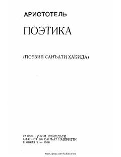

PAristotelning jahondagi ilk adabiyot nazariyasi va poetika san'atiga bag'ishlangan mashhur asari.
Ushbu asar jahonda yuzaga kelgan eng birinchi adabiyot nazariyasi bo'lib, uning asoschisi Aristotel tomonidan yozilgan. Kitobda poeziya san'ati, uning turlari (drama, epos, lirika) hamda ularning ijtimoiy-ma'rifiy mohiyati atroflicha yoritib berilgan.